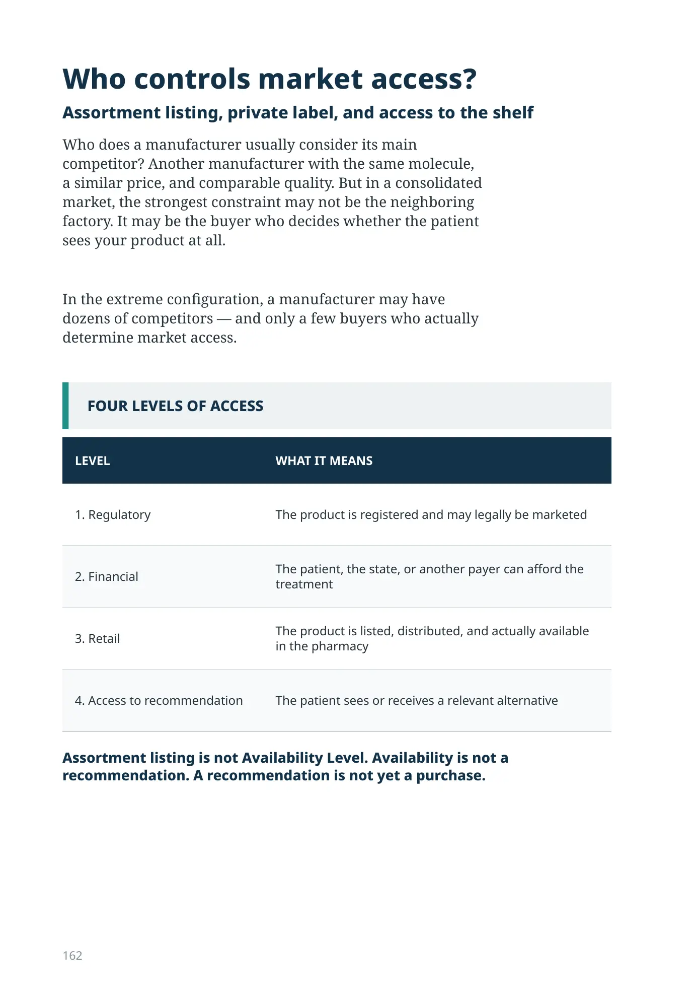
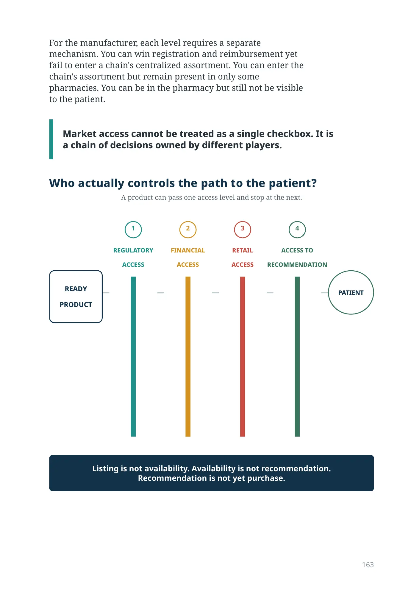
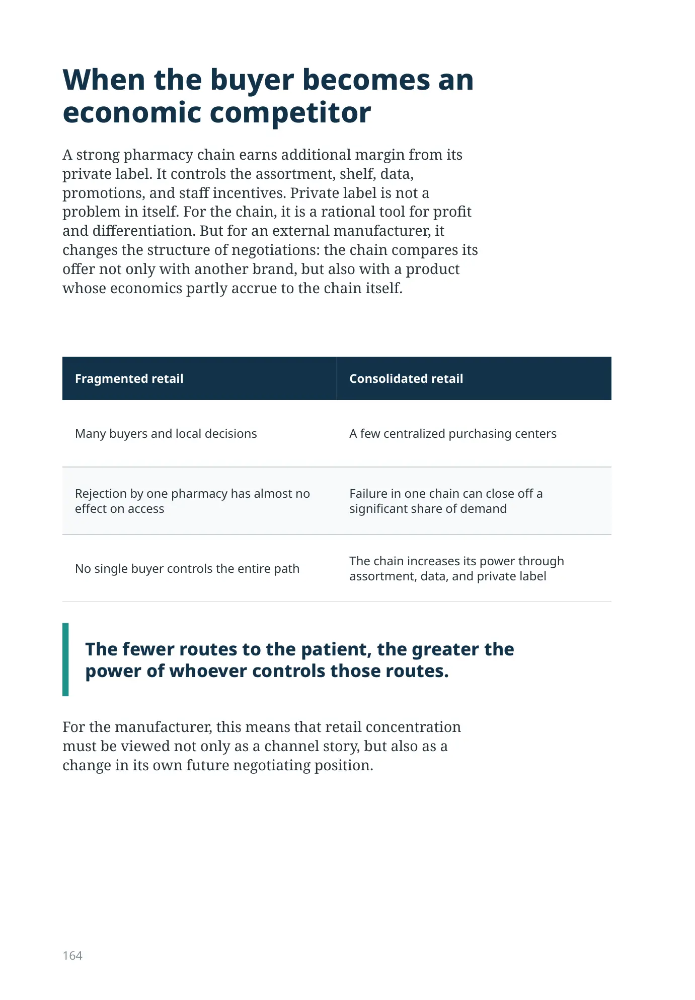
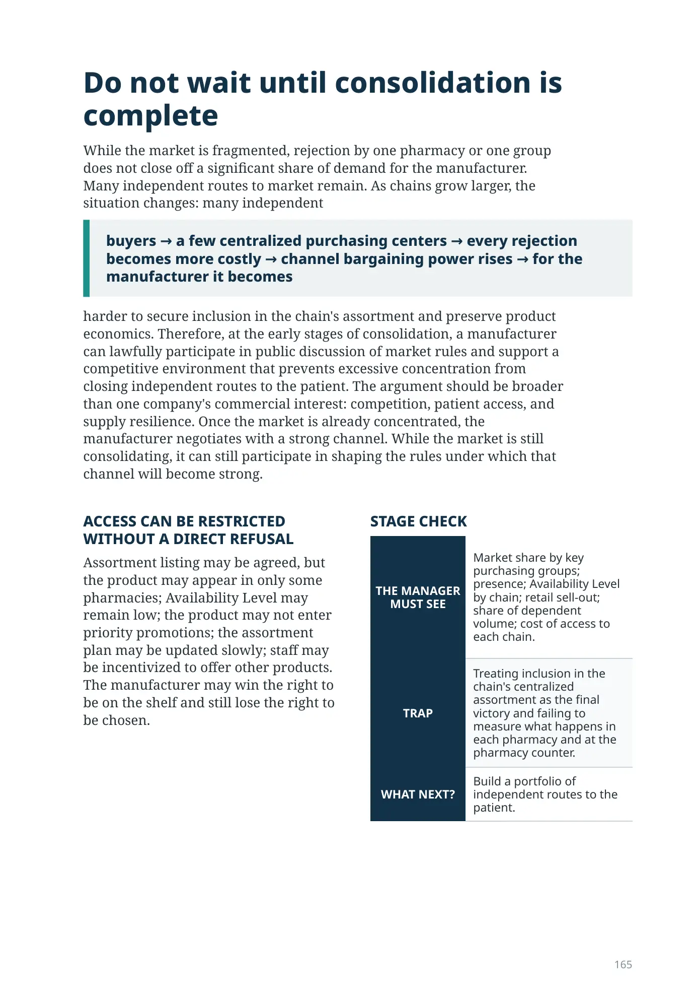

Who controls market access?
Assortment listing, private label, and access to the shelf
Who does a manufacturer usually consider its main competitor? Another manufacturer with the same molecule, a similar price, and comparable quality. But in a consolidated market, the strongest constraint may not be the neighboring factory. It may be the buyer who decides whether the patient sees your product at all.
In the extreme configuration, a manufacturer may have dozens of competitors — and only a few buyers who actually determine market access.
| LEVEL | WHAT IT MEANS |
|---|---|
| 1. Regulatory | The product is registered and may legally be marketed |
| 2. Financial | The patient, the state, or another payer can afford the treatment |
| 3. Retail | The product is listed, distributed, and actually available in the pharmacy |
| 4. Access to recommendation | The patient sees or receives a relevant alternative |
Assortment listing is not Availability Level. Availability is not a recommendation. A recommendation is not yet a purchase.
For the manufacturer, each level requires a separate mechanism. You can win registration and reimbursement yet fail to enter a chain's centralized assortment. You can enter the chain's assortment but remain present in only some pharmacies. You can be in the pharmacy but still not be visible to the patient.
Market access cannot be treated as a single checkbox. It is a chain of decisions owned by different players.
A product can pass one access level and stop at the next.
PRODUCT
ACCESS
ACCESS
ACCESS
RECOMMENDATION
When the buyer becomes an economic competitor
A strong pharmacy chain earns additional margin from its private label. It controls the assortment, shelf, data, promotions, and staff incentives. Private label is not a problem in itself. For the chain, it is a rational tool for profit and differentiation. But for an external manufacturer, it changes the structure of negotiations: the chain compares its offer not only with another brand, but also with a product whose economics partly accrue to the chain itself.
| Fragmented retail | Consolidated retail |
|---|---|
| Many buyers and local decisions | A few centralized purchasing centers |
| Rejection by one pharmacy has almost no effect on access | Failure in one chain can close off a significant share of demand |
| No single buyer controls the entire path | The chain increases its power through assortment, data, and private label |
The fewer routes to the patient, the greater the power of whoever controls those routes.
For the manufacturer, this means that retail concentration must be viewed not only as a channel story, but also as a change in its own future negotiating position.
Do not wait until consolidation is complete
While the market is fragmented, rejection by one pharmacy or one group does not close off a significant share of demand for the manufacturer. Many independent routes to market remain. As chains grow larger, the situation changes: many independent
buyers → a few centralized purchasing centers → every rejection becomes more costly → channel bargaining power rises → for the manufacturer it becomes
harder to secure inclusion in the chain's assortment and preserve product economics. Therefore, at the early stages of consolidation, a manufacturer can lawfully participate in public discussion of market rules and support a competitive environment that prevents excessive concentration from closing independent routes to the patient. The argument should be broader than one company's commercial interest: competition, patient access, and supply resilience. Once the market is already concentrated, the manufacturer negotiates with a strong channel. While the market is still consolidating, it can still participate in shaping the rules under which that channel will become strong.
ACCESS CAN BE RESTRICTED WITHOUT A DIRECT REFUSAL
Assortment listing may be agreed, but the product may appear in only some pharmacies; Availability Level may remain low; the product may not enter priority promotions; the assortment plan may be updated slowly; staff may be incentivized to offer other products. The manufacturer may win the right to be on the shelf and still lose the right to be chosen.
STAGE CHECK
| THE MANAGER MUST SEE | Market share by key purchasing groups; presence; Availability Level by chain; retail sell-out; share of dependent volume; cost of access to each chain. |
|---|---|
| TRAP | Treating inclusion in the chain's centralized assortment as the final victory and failing to measure what happens in each pharmacy and at the pharmacy counter. |
| WHAT NEXT? | Build a portfolio of independent routes to the patient. |